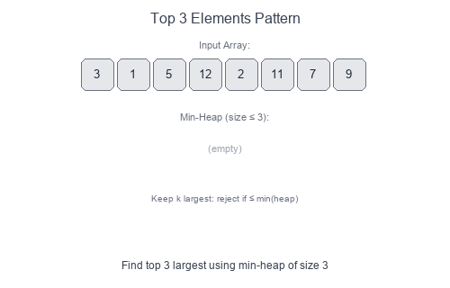

Introduction to Top 'K' Elements Pattern
The Top 'K' Elements pattern uses a heap (priority queue) to efficiently track the largest or smallest K elements in a dataset. Instead of sorting the entire collection, you maintain a heap of size K, achieving better time complexity.
Visual Example
Finding Top K Using Min-Heap

To find the K largest elements, use a min-heap of size K:
- The heap always contains the K largest elements seen so far
- The root (minimum) is the K-th largest
- New elements only enter if they're larger than the current minimum
When to Use
- Find the K largest or smallest elements.
- Find the K-th largest/smallest element.
- Find K most frequent elements.
- K closest points to origin.
- Merge K sorted lists (related pattern).
- Any problem asking for "top K" or "K-th" of something.
Core Insight
| Goal | Heap Type | Why |
|---|---|---|
| K largest | Min-heap of size K | Root = K-th largest; reject smaller |
| K smallest | Max-heap of size K | Root = K-th smallest; reject larger |
Pattern Recipe
- Initialize a heap (min-heap for K largest, max-heap for K smallest).
- Add the first K elements to the heap.
- For each remaining element:
- Compare with heap root
- If better, pop root and push new element
- Result: Heap contains the K best elements; root is the K-th best.
Complexity
- Time: $O(n \log k)$ — each heap operation is $O(\log k)$
- Space: $O(k)$ — heap stores at most K elements
- Better than sorting when $k \ll n$ (since sorting is $O(n \log n)$)
Short Examples — Python
K Largest Elements
import heapq
def k_largest(nums: list[int], k: int) -> list[int]:
# Min-heap of size k
min_heap = []
for num in nums:
heapq.heappush(min_heap, num)
if len(min_heap) > k:
heapq.heappop(min_heap) # Remove smallest
return min_heap # Contains k largest
# Example: [3, 1, 5, 12, 2, 11], k=3 → [5, 11, 12]
K-th Largest Element
import heapq
def kth_largest(nums: list[int], k: int) -> int:
min_heap = []
for num in nums:
heapq.heappush(min_heap, num)
if len(min_heap) > k:
heapq.heappop(min_heap)
return min_heap[0] # Root = k-th largest
# Example: [3, 2, 1, 5, 6, 4], k=2 → 5
K Closest Points to Origin
import heapq
def k_closest(points: list[list[int]], k: int) -> list[list[int]]:
# Max-heap (negate distance) of size k
max_heap = []
for x, y in points:
dist = -(x*x + y*y) # Negate for max-heap
heapq.heappush(max_heap, (dist, [x, y]))
if len(max_heap) > k:
heapq.heappop(max_heap)
return [point for _, point in max_heap]
K Most Frequent Elements
import heapq
from collections import Counter
def k_most_frequent(nums: list[int], k: int) -> list[int]:
freq = Counter(nums)
# Min-heap by frequency, size k
min_heap = []
for num, count in freq.items():
heapq.heappush(min_heap, (count, num))
if len(min_heap) > k:
heapq.heappop(min_heap)
return [num for _, num in min_heap]
Common Pitfalls
- Using wrong heap type: min-heap for K largest, max-heap for K smallest.
- Forgetting Python's
heapqis a min-heap; negate values for max-heap behavior. - Not handling edge cases:
k == 0,k > len(nums). - Returning heap directly without extracting values (heap is unordered internally).
Alternative: QuickSelect
For finding just the K-th element (not all K elements), QuickSelect achieves $O(n)$ average time:
import random
def quick_select(nums: list[int], k: int) -> int:
k = len(nums) - k # Convert to k-th smallest index
def partition(left, right):
pivot_idx = random.randint(left, right)
nums[pivot_idx], nums[right] = nums[right], nums[pivot_idx]
pivot = nums[right]
i = left
for j in range(left, right):
if nums[j] <= pivot:
nums[i], nums[j] = nums[j], nums[i]
i += 1
nums[i], nums[right] = nums[right], nums[i]
return i
left, right = 0, len(nums) - 1
while left <= right:
pivot_idx = partition(left, right)
if pivot_idx == k:
return nums[k]
elif pivot_idx < k:
left = pivot_idx + 1
else:
right = pivot_idx - 1
return nums[k]